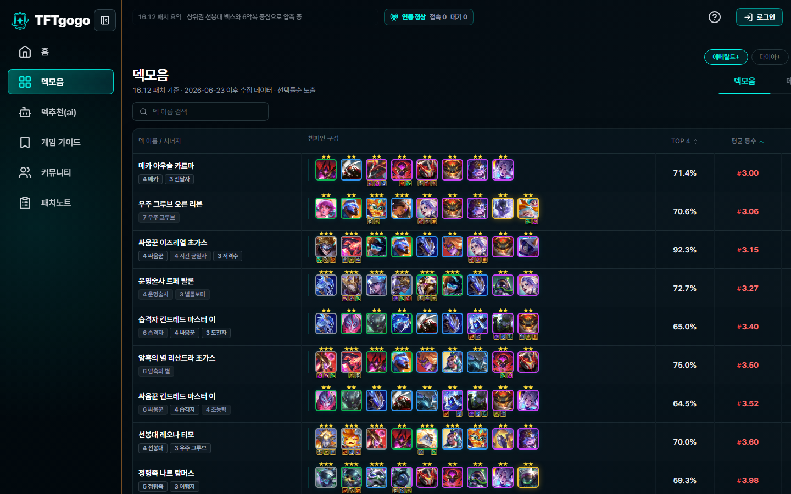

게임 가이드 데이터 import
CDragon 기반 챔피언, 아이템, 시너지, 증강 데이터를 수집하고 패치 버전 기준으로 조회할 수 있도록 scheduler와 API 흐름을 정리했습니다.
Final Project
롤토체스 유저를 위한 전적 분석, AI 메타 추천, 커뮤니티 통합 플랫폼입니다. 게임 가이드와 패치노트 도메인을 맡아 CDragon 데이터 import, 패치노트 크롤링/파싱, GameGuide AI Pathfinder, 운영 배포 검증을 중심으로 작업했습니다.

Repository
Product Screenshots
추천 메타, 전적 검색, 파티원 찾기, 실시간 채팅 흐름을 한 화면에서 확인합니다.
패치 버전 기준 시너지, 아이템, 증강체, 챔피언 정보를 비교할 수 있습니다.

메타 덱의 챔피언 구성, 승률, 평균 등수를 표 형태로 확인합니다.
Features
CDragon 기반 챔피언, 아이템, 시너지, 증강 데이터를 수집하고 패치 버전 기준으로 조회할 수 있도록 scheduler와 API 흐름을 정리했습니다.

공식 패치노트를 수집해 챔피언, 아이템, 시너지 변경을 buff/nerf/adjust 기준으로 분류하고 검색과 패치 필터를 연결했습니다.

FastAPI AI 서버와 Spring 프록시, 프론트 채팅 위젯을 연결해 게임 가이드 맥락에서 질문과 답변을 주고받는 흐름을 구현했습니다.

CORS, OAuth2 redirect, AI 서버 URL, OpenAI 키, healthcheck, ALB 라우팅처럼 배포 중 누락되기 쉬운 설정을 guard와 smoke 기준으로 점검했습니다.
Architecture Notes
게임 데이터 import, 패치노트 수집, AI 서버 연동, 운영 배포 설정은 서로 다른 실패 지점을 갖습니다. 그래서 기준 데이터를 먼저 고정하고 실패 시 원인을 추적할 수 있는 구조를 우선했습니다.
프론트엔드와 맞춰야 하는 요청/응답, 검색 조건, 페이지네이션, 실패 응답을 먼저 정리했습니다. 게임 가이드와 패치노트 화면이 사용하는 필드는 패치 버전 기준이 흔들리지 않도록 나눴습니다.
CDragon 데이터와 공식 패치노트는 최신 버전 기준, 수집 실패 fallback, scheduler 중복 실행 방지 기준을 함께 고려했습니다. 패치노트는 서버 시작 시 1회 import, 매시간 목록 확인, 매일 06:30 최신 상세 refresh로 나누고, DB에 없는 sourceKey/sourceUrl/version만 상세 import하도록 설계했습니다.
로컬과 dev 기본값은 OFF로 두고 공용 개발 서버나 운영 서버에서만 켜도록 분리했으며, 단일 서버 기준 중복 실행은 AtomicBoolean guard로 막았습니다. 멀티 서버 환경에서는 공용 락이 필요하다는 후속 이슈까지 분리해 운영 리스크를 남겼습니다.
GameGuide AI는 FastAPI endpoint, Spring proxy, React 채팅 위젯이 맞물리는 구조라 요청 흐름과 오류 응답을 분리해 확인했습니다.
배포 후 확인해야 할 로그, 환경 변수, AI 서버 연결, healthcheck, ALB 라우팅 실패 상황을 체크했습니다. 오류가 발생했을 때 어느 구간에서 실패했는지 추적할 수 있도록 guard와 smoke 기준을 남겼습니다.
Release Management
TFT-gogo는 여러 사람이 동시에 작업하는 팀 프로젝트로 진행했습니다. 도메인 명세, API 계약, 이슈와 PR, 배포 체크리스트, 릴리즈 이후 확인 기준을 연결해 기능 구현이 실제 실행 가능한 상태까지 이어지도록 관리했습니다.
01 / Requirement
게임 가이드, 패치노트, AI 추천, 커뮤니티처럼 도메인이 나뉘어 있어 담당 범위와 API 필요 항목을 문서로 정리했습니다. 변경된 요구사항은 구현 전에 문서에 먼저 반영해 팀원이 같은 기준을 보고 작업하도록 맞췄습니다.

02 / Pull Request
GitHub Issue를 기준으로 브랜치를 만들고 PR에서 구현 의도, 변경 범위, 확인 방법을 공유했습니다. 리뷰 코멘트가 생기면 수정 커밋으로 반영해 논의가 코드에 어떻게 반영됐는지 추적할 수 있게 했습니다.
03 / Release
요청/응답 필드, 에러 포맷, 인증이 필요한 API를 프론트엔드와 먼저 맞췄습니다. 배포 전에는 환경 변수, DB 연결, AI 서버 URL, OpenAI API 키, 빌드 결과를 확인해 릴리즈 직전의 실패 가능성을 줄였습니다.

04 / Release QA
배포가 끝난 뒤에는 주요 화면 접근, 게임 가이드 조회, 패치노트 조회, AI Pathfinder 요청처럼 사용자가 실제로 거치는 흐름을 기준으로 다시 확인했습니다. 문제가 발생했을 때는 로그, 환경 변수, DB 연결, AI 서버 응답을 순서대로 확인하는 기준을 팀 문서에 남겼습니다.

05 / AI Skills
요구사항을 먼저 정리하고, AI에게 역할과 제약 조건, 검증 기준을 함께 전달해 코드 초안을 만들었습니다. 생성된 코드는 바로 붙여넣지 않고 프로젝트 구조, 의존성, 예외 처리 방식에 맞는지 읽고 수정한 뒤 적용했습니다.